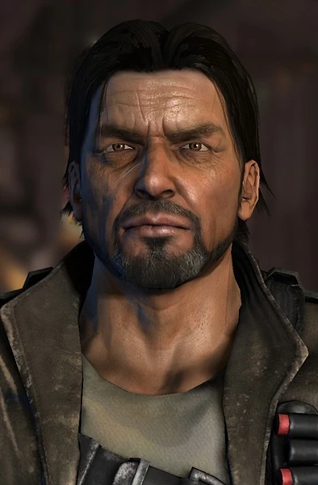
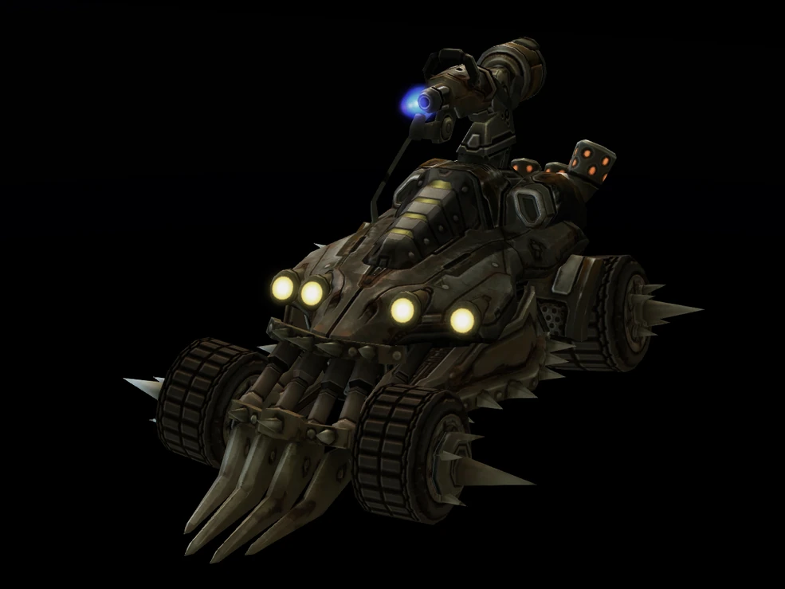
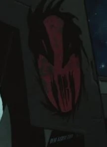
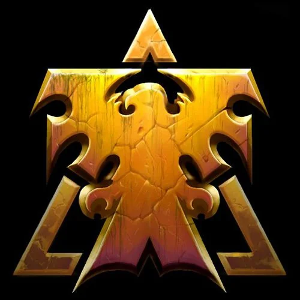
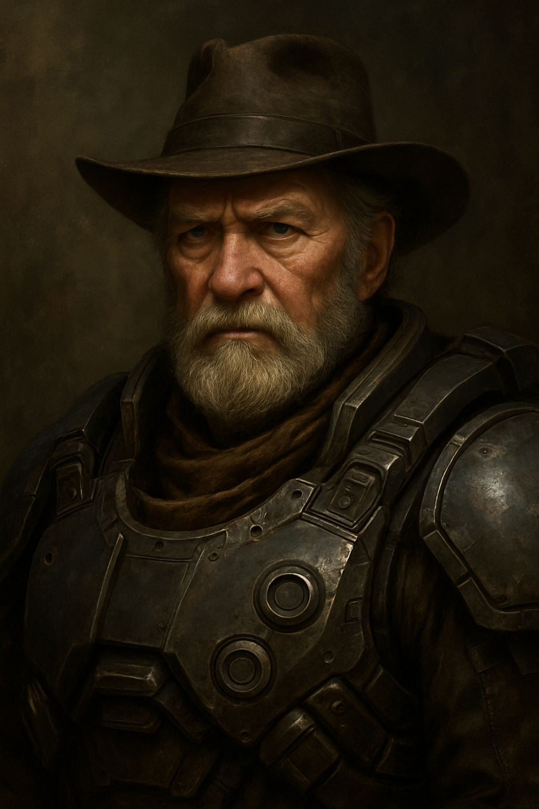
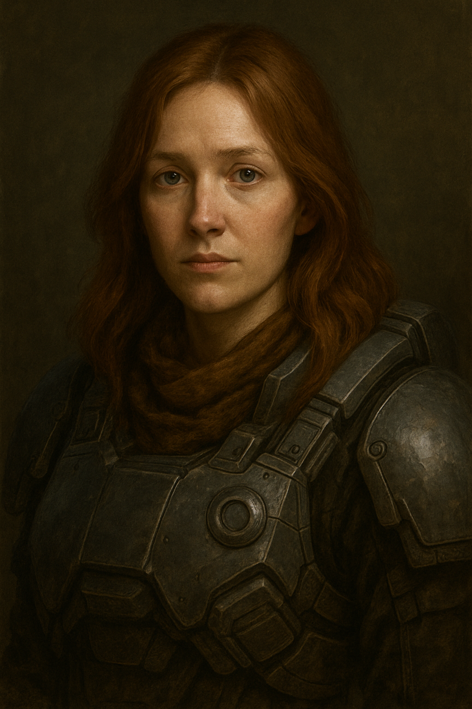
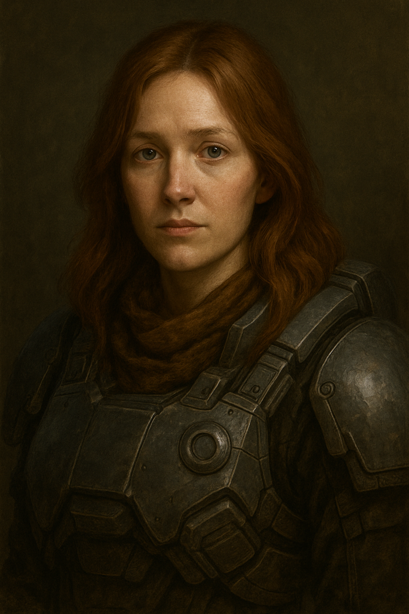

Jim Raynor

Breve biografía de este icónico personaje del universo Starcraft
Nacimiento: 20 de agosto de 2470 en Siloh.
Afiliaciones:
- Equipo de demolición de Centerville

- Confederación Terran
- Cuerpo de Marines de la Confederación, número de servicio 822-275-SR1
- Batallón 321 de los Rangers Coloniales
- Demonios Celestiales
- Primer Escuadrón
- Milicia Colonial de Mar Sara
- Screaming Skulls 
- Sindicato del crimen de Scutter O'Banon
- Hijos de Korhal
- Rebeldes de Raynor
- Dominio Terran 
Árbol familiar
(sin Kerrigan?? WTF)

 
